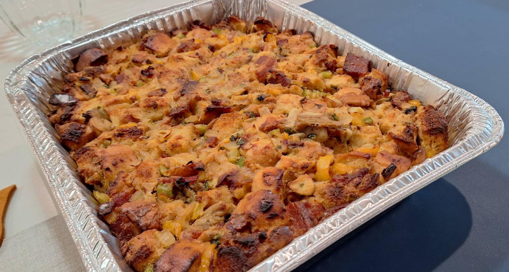

French Bread Oyster Dressing

Ingredients
Full Recipe
- 2½ loaves French bread (~1500 g)
- 1-2 qt oysters, shucked
- 1 lb bacon, cubed
- 2 yellow onions, chopped
- 3 stalks celery, chopped
- 2 bell pepper, chopped
- 4 cloves garlic, chopped
- 1-2 jalapenos, seeded and sliced (optional)
- 2 tsp salt
- ¼ C butter, melted
- 1 tsp black pepper
- 2 tsp Cajun seasoning
- 4 eggs
- 1½ qt chicken stock
Small Recipe
- 1 loaf French bread (~600 g)
- 1-2 qt oysters, shucked
- 1 lb bacon, cubed
- 1 yellow onion, chopped
- 2 stalks celery, chopped
- 1 bell pepper, chopped
- 2 cloves garlic, chopped
- 1-2 jalapenos, seeded and sliced (optional)
- 1 tsp salt
- ¼ C butter, melted
- ½ tsp black pepper
- 1 tsp Cajun seasoning
- 2 eggs
- ¾ C chicken stock
Directions
- Bring chicken stock to a boil and poach oysters until just done (do not overcook). Save oysters and poaching liquid.
- Cut the French bread into fairly small cubes using a sharp knife and set aside.
- Brown the bacon thoroughly in a black iron pot, remove, and sauté the vegetables in the drippings until limp.
- Combine the bacon, vegetables, seasonings, oysters and melted butter with the bread cubes and toss.
- Gradually add the oyster poaching liquid to the bread mixture.
- Add the eggs one at a time to bind the mixture. You may not need to add all four eggs. That should be determined per batch.
- Turn the mixture into a buttered casserole and bake at 400° for 30 minutes or until golden brown.
Chef's Notes
- You may also use this dressing mixture to stuff any poultry for baking. You can also cook it stand-alone, which is a very popular side dish
- You can cook the bacon in the oven if that is more convenient. If you choose to brown the bacon in cast iron, remember to add 2-3 oz of water to facilitate the rendering process. The water will cook the bacon and evaporate, leaving the bacon to render more completely and without burning
- Cut the bread into small cubes and toast them while the oven pre-heats for the bacon. This makes for a better vehicle for the butter and bacon grease.
- Add the stock in batches in order to distribute the stock evenly throughout the batch.
- I used French bread and brioche combination, cut into cubes, dried for 3 days then toasted before using. Don't panic and add too much liquid (like I did). The 6 oz (¾ C) of stock should probably be close to 12 oz, but not 20 oz. The wetter version still cooked through but it should be drier. The wetter version also needed an extra egg to bind it.
- I baked it at 425° (it was time-sharing with the chicken). If this is the case, cut the time to about 20 minutes to compensate
Michael Fritsche
mbf@fritsche.org